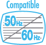

2 |
Consignes d’utilisation |
 |
❶ Utilisez la dragonne! Assurez-vous que tous les joueurs utilisent la dragonne (RVL-018 ou RVL-018A) et que les guides sont correctement ajust√©s. Lorsque plusieurs joueurs utilisent la m√™me t√©l√©commande Wii, assurez-vous que chacun d‚Äôeux ajuste la dragonne correctement. Attacher la dragonne permet d‚Äô√©viter de laisser tomber la t√©l√©commande Wii si vous la l√¢chez accidentellement pendant une partie. 

❷ Tenez la t√©l√©commande Wii fermement et ne la l√¢chez pas! M√™me lorsque vous portez la dragonne, ne l√¢chez jamais la t√©l√©commande Wii lorsque vous jouez. Par exemple, dans le jeu de bowling de Wii Sports™, vous devez rel√¢cher le bouton B de la t√©l√©commande Wii ‚Äì ET PAS LA TELECOMMANDE Wii ELLE-MEME ‚Äì pour lancer la boule. Si vos mains deviennent moites ou humides pour n‚Äôimporte quelle raison, arr√™tez de jouer et s√©chez-les avant de recommencer √† jouer. Evitez tout mouvement excessivement ample, rapide ou vigoureux qui pourrait vous faire l√¢cher la t√©l√©commande Wii et casser la dragonne. Si cela se produit, vous risquez de blesser les personnes alentour et de casser la t√©l√©commande Wii ou d‚Äôautres objets. Informations suppl√©mentaires sur l'utilisation de la dragonne: Il se peut qu'il vous faille effectuer des mouvements secs ou rapides avec la t√©l√©commande Wii ou le Nunchuk™ lorsque vous jouez √† la Wii. Veuillez utiliser la dragonne au cas o√π vous l√¢cheriez la t√©l√©commande Wii afin de r√©duire le risque d‚Äôendommager la t√©l√©commande Wii, les objets alentour ou de blesser des personnes.
Laissez suffisamment d’espace libre autour de vous! Vous tenterez probablement de vous déplacer pendant vos parties, assurez-vous donc de jouer suffisamment loin des meubles, des objets ou des autres personnes pour éviter de les toucher accidentellement. Comme indiqué dans le mode d'emploi Wii, il vous est recommandé de vous tenir à un minimum d'un mètre de la télévision.
Ces informations sont également disponibles sur:

Nombreux sont ceux qui ne connaissent pas la différence entre le 50 Hz et le 60 Hz, mais comme la plupart des téléviseurs modernes prennent en charge le 60 Hz, cela vaut la peine de vérifier si votre téléviseur est compatible. En quelques mots, les Hertz (Hz) expriment le nombre d’images par seconde affichées sur votre écran. En 50 Hz, l’écran affiche 25 images par seconde, contre 30 en 60 Hz : la différence peut paraître minime, mais l’image gagne indéniablement en qualité quand on passe de 25 à environ 30 images par seconde. En 60 Hz, l’image est plus lisse, moins clignotante et le jeu fonctionne à une vitesse optimale, ce qui vous permet de bénéficier d’une expérience de jeu unique. La console Wii est en mode 50 Hz (576i) par défaut. Pour activer le mode 60 Hz (480i), sélectionnez TYPE DE TELEVISEUR dans les paramètres Wii. Cependant, certains téléviseurs, principalement les plus anciens, ne peuvent pas afficher les jeux en mode 60 Hz (480i) et certains joueurs peuvent donc avoir des difficultés à utiliser ce mode d’affichage sur leur téléviseur. Pour savoir si votre téléviseur est compatible avec le mode 60 Hz (480i), consultez son mode d’emploi ou contactez le fabricant. Si, une fois le mode 60 Hz (480i) activé, votre écran n’affiche aucune image ou si l’image est déformée, il est probable que votre téléviseur ne prenne pas en charge le mode 60 Hz (480i). Pour revenir au réglage par défaut, appuyez sur RESET sur la console Wii tout en maintenant bas enfoncé sur la manette pour que la console Wii redémarre en mode 50 Hz (576i). Reportez-vous au mode d’emploi Wii – Chaînes et paramètres pour de plus amples informations sur ce réglage. De plus, lorsque vous branchez le câble RVB Wii (RVL-013) (vendu séparément) sur un téléviseur qui dispose d’une entrée RVB et d’une compatibilité PAL60, ou que vous branchez le câble composante AV Wii (RVL-011) (vendu séparément) sur un téléviseur qui dispose d’une entrée vidéo composante, vous pouvez profiter d’une image bien plus nette.
EDTV/HDTV (480p) est un mode d‚Äôaffichage √† balayage progressif qui permet d‚Äôobtenir la meilleure qualit√© d‚Äôimage possible. Avec ce mode, l‚Äôimage est plus pr√©cise et moins clignotante, et le jeu fonctionne √† une vitesse optimale, ce qui vous permet de b√©n√©ficier d‚Äôune exp√©rience de jeu unique. Chez Nintendo®, nous voulons que les joueurs puissent profiter de leurs jeux dans les meilleures conditions possibles. Dans certains cas, ce mode ne peut pas √™tre affich√©, cela d√©pend de la combinaison t√©l√©viseur-c√¢ble que vous utilisez. Pour savoir si votre t√©l√©viseur est compatible avec l‚Äôaffichage Progressive Scan n√©cessaire pour le mode EDTV/HDTV (480p), consultez son mode d‚Äôemploi ou contactez le fabricant pour plus de d√©tails. Assurez-vous que vous utilisez le c√¢ble composante AV Wii (RVL-011) (vendu s√©par√©ment) et param√©trez votre t√©l√©viseur pour le Progressive Scan lorsque vous choisissez ce mode. La console Wii est en mode 50 Hz (576i) par d√©faut. Pour activer le mode EDTV / HDTV (480p), veuillez s√©lectionner TYPE DE TELEVISEUR dans les param√®tres Wii. Reportez-vous au mode d‚Äôemploi Wii ‚Äì Cha√Ænes et param√®tres pour de plus amples informations sur ce r√©glage. |


 |
 |
 |